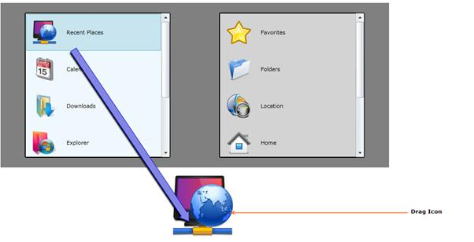

DragIcon is an image that describes the object that is being dragged. It will follow the mouse pointer and will always be on top of other objects. This feature provides more visual guide for the drag and drop operations.
Use Case Scenarios
The DragIcon provides information to the user about the object that is being dragged. It prevents the mistake of dragging objects that the user does not want to drag.
Adding DragIcon to an Application
In order to set a DragIcon, use the DragIcon property, which is part of the DragDropEventArgs. The most suitable moment to set a DragIcon is in the DragAndDropManager_DragStarted() event handler. The following lines of code explain this.
|
[C#] void DragAndDropManager_DragStarted(object sender, DragDropEventArgs args) { args.DragIcon = new Image() { Source = obj.Icon }; } |
Example:

Figure 1140 : DragIcon